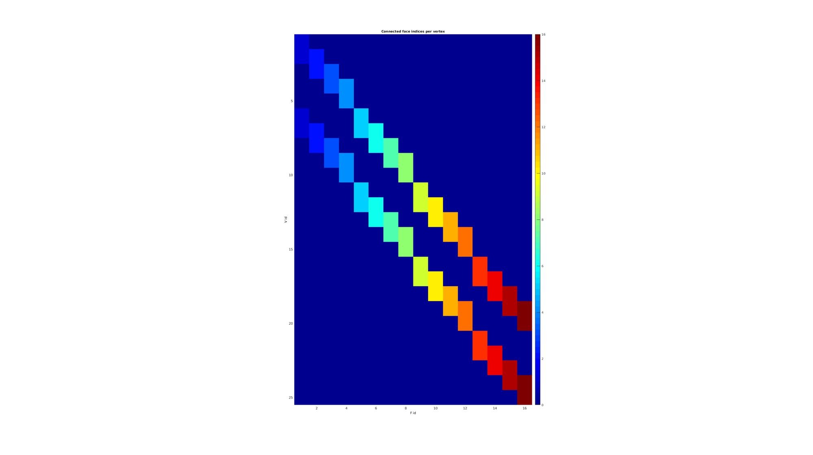
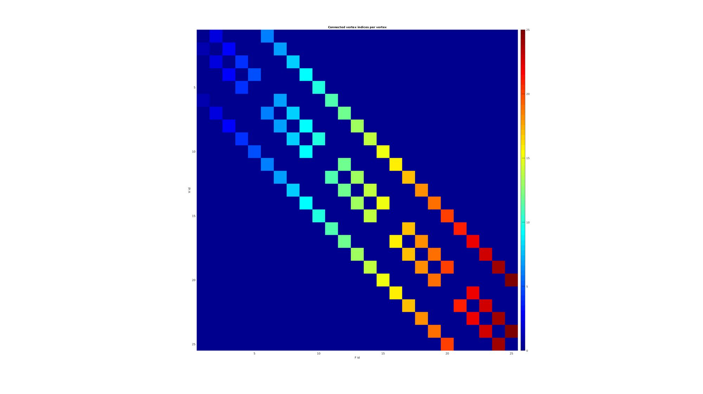
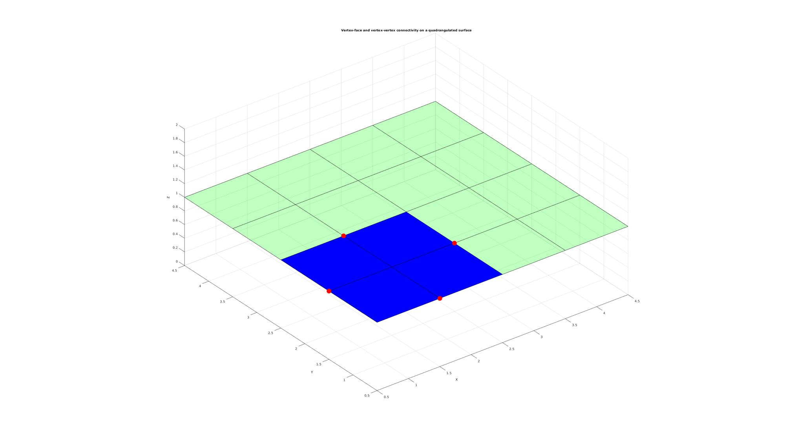
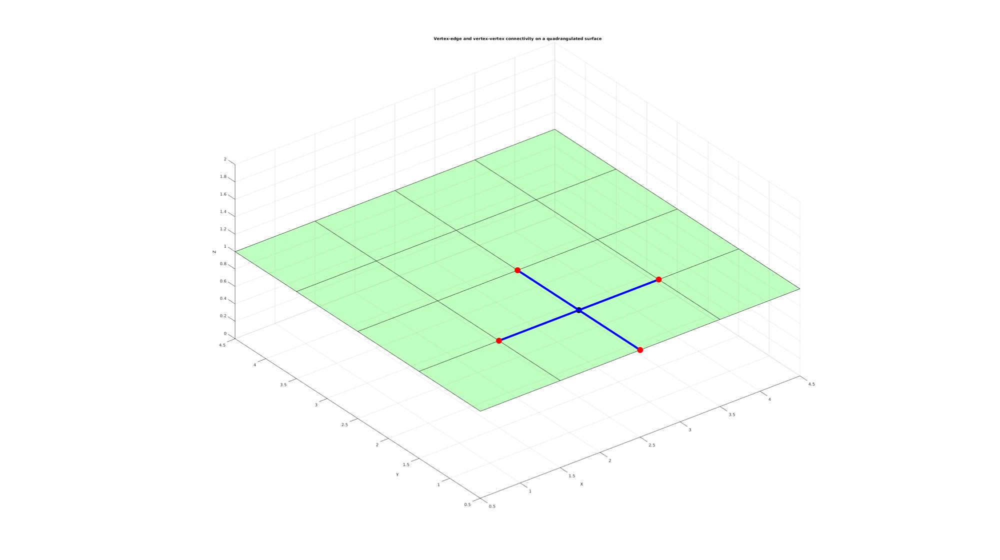
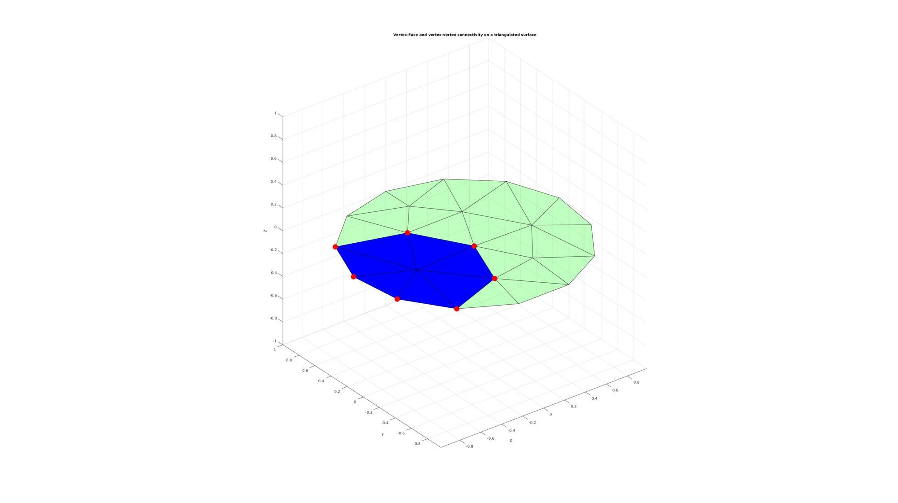
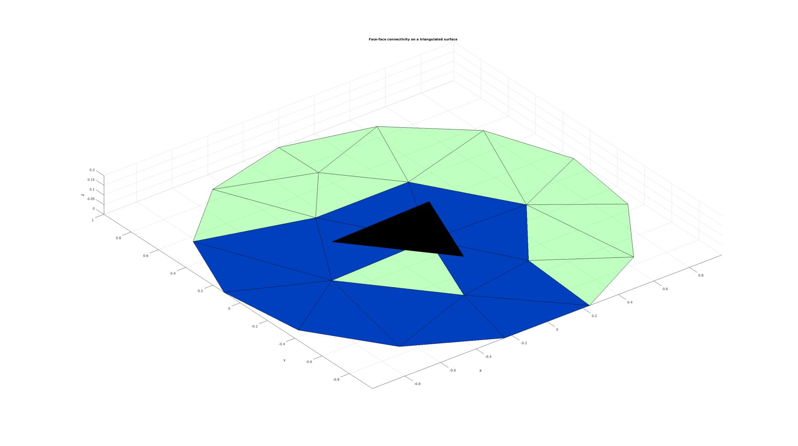
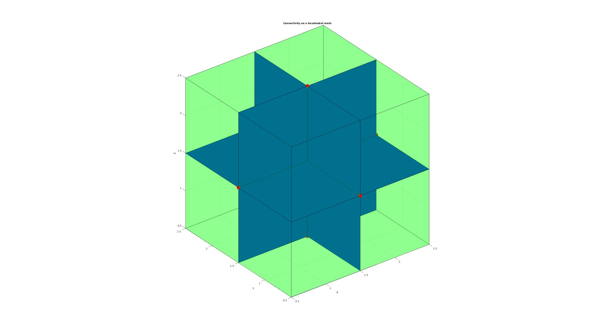
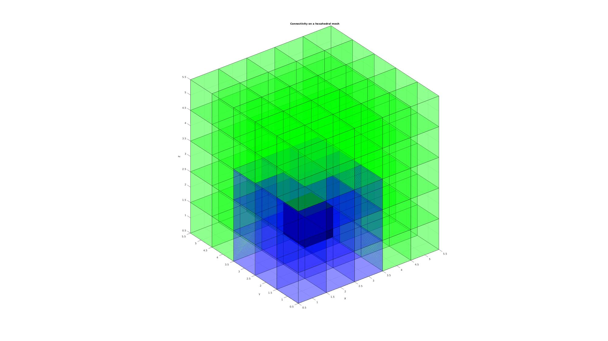
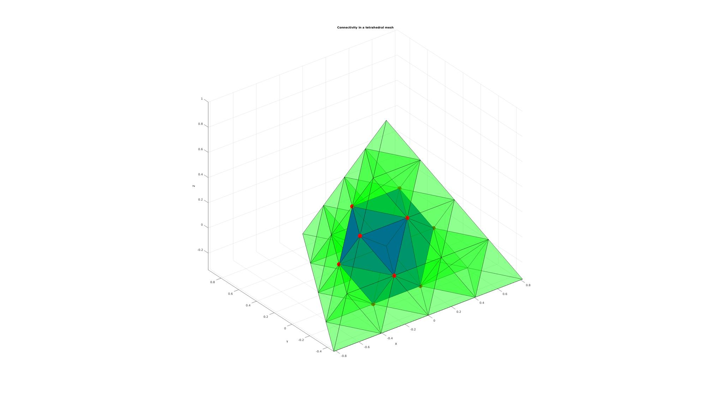

tesIND
Below is a demonstration of the features of the tesIND function
Contents
- Syntax
- Description
- Examples
- Studying connectivity on quadrangulated patch data
- Studying edge connectivity on a surface
- Studying connectivity on triangulated patch data
- Studying connectivity of faces and vertices on hexahedral mesh
- Studying connectivity of elements on hexahedral mesh
- Studying connectivity on tetrahedral mesh
Syntax
[IND_F,IND_V,IND_FF]=tesIND(F,V,sparseOpt);
Description
The tesIND function provides a description of indices of tesselated entities with respect to associated nodes and visa versa.
Examples
clear; close all; clc;
Plot Settings
fontSize=10; markerSize=50; faceAlpha=0.25; faceAlpha2=1;
Studying connectivity on quadrangulated patch data
Create example data
n=4;
M=zeros(n,n,1);
[F,V,~]=ind2patch(M==0,M,'sku');
Compute connectivity using tesIND
[IND_F,IND_V,IND_FF]=tesIND(F,[],1);
Visualizing the sparse face connectivity matrix
cFigure; hold on; title('Connected face indices per vertex','FontSize',fontSize); xlabel('F id','FontSize',fontSize);ylabel('V id','FontSize',fontSize); imagesc(full(IND_F)); axis equal; axis tight; axis ij; colorbar; colormap jet; drawnow;
Visualizing the sparse vertex connectivity matrix
cFigure; hold on; title('Connected vertex indices per vertex','FontSize',fontSize); xlabel('F id','FontSize',fontSize);ylabel('V id','FontSize',fontSize); imagesc(full(IND_V)); axis equal; axis tight; axis ij; colorbar; colormap jet; drawnow;
% Select a vertex for visualization logicValid=IND_F>0; [~,indPick]=max(sum(logicValid,2)); %E.g. this one since its embedded properly %The faces sharing this vertex indFaces=IND_F(indPick,:); indFaces=indFaces(indFaces>0); %The vertices attached by an edge to this vertex indVertices=IND_V(indPick,:); indVertices=indVertices(indVertices>0);
Show results
cFigure; hold on; title('Vertex-face and vertex-vertex connectivity on a quadrangulated surface','FontSize',fontSize); xlabel('X','FontSize',fontSize);ylabel('Y','FontSize',fontSize); zlabel('Z','FontSize',fontSize); patch('Faces',F,'Vertices',V,'FaceColor','g','FaceAlpha',faceAlpha); plotV(V(indPick,:),'k.','MarkerSize',markerSize); patch('Faces',F(indFaces,:),'Vertices',V,'FaceColor','b','FaceAlpha',faceAlpha2); plotV(V(indVertices,:),'r.','MarkerSize',markerSize); view(3); axis equal; axis tight; grid on; drawnow;
% Select a vertex for visualization logicValid=IND_FF>0; [~,indPick]=max(sum(logicValid,2)); %E.g. this one since its embedded properly %The faces sharing this vertex indFaces=IND_FF(indPick,:); indFaces=indFaces(indFaces>0);
Show results
cFigure; hold on; title('Face-face connectivity on a quadrangulated surface','FontSize',fontSize); xlabel('X','FontSize',fontSize);ylabel('Y','FontSize',fontSize); zlabel('Z','FontSize',fontSize); patch('Faces',F,'Vertices',V,'FaceColor','g','FaceAlpha',faceAlpha); Vp=V; Vp(:,3)=Vp(:,3)+0.2; patch('Faces',F(indPick,:),'Vertices',Vp,'FaceColor','k','FaceAlpha',faceAlpha2); patch('Faces',F(indFaces,:),'Vertices',V,'FaceColor','b','FaceAlpha',faceAlpha2); view(3); axis equal; axis tight; grid on; drawnow;

Studying edge connectivity on a surface
[E,indUni1,indUni2]=patchEdges(F,1); [IND_E,IND_V,IND_EE]=tesIND(E,[],1);
Select a vertex for visualization
logicValid=IND_EE>0; [~,indPick]=max(sum(logicValid,2)); %E.g. this one since its embedded properly %The faces sharing this vertex indEdges=IND_E(indPick,:); indEdges=indEdges(indEdges>0); %The vertices attached by an edge to this vertex indVertices=IND_V(indPick,:); indVertices=indVertices(indVertices>0);
cFigure; hold on; title('Vertex-edge and vertex-vertex connectivity on a quadrangulated surface','FontSize',fontSize); xlabel('X','FontSize',fontSize);ylabel('Y','FontSize',fontSize); zlabel('Z','FontSize',fontSize); patch('Faces',F,'Vertices',V,'FaceColor','g','FaceAlpha',faceAlpha); plotV(V(indPick,:),'k.','MarkerSize',markerSize); patch('Faces',E(indEdges,:),'Vertices',V,'FaceColor','none','EdgeColor','b','LineWidth',5); plotV(V(indVertices,:),'r.','MarkerSize',markerSize); view(3); axis equal; axis tight; grid on; drawnow;
Studying connectivity on triangulated patch data
Create example data
n=25;
t=linspace(0,2*pi,n);
t=t(1:end-1);
x=sin(t);
y=cos(t);
V=[x(:) y(:)];
pointSpacing=0.5;
[F,V]=regionTriMesh2D({V},pointSpacing,1,0);
V(:,3)=0;
Compute connectivity using tesIND
[IND_F,IND_V,IND_FF]=tesIND(F,[],1);
% Select a vertex for visualization logicValid=IND_F>0; [~,indPick]=max(sum(logicValid,2)); %E.g. this one since its embedded properly %The faces sharing this vertex indFaces=IND_F(indPick,:); indFaces=indFaces(indFaces>0); %The vertices attached by an edge to this vertex indVertices=IND_V(indPick,:); indVertices=indVertices(indVertices>0);
Show results
cFigure; hold on; title('Vertex-Face and vertex-vertex connectivity on a triangulated surface','FontSize',fontSize); xlabel('X','FontSize',fontSize);ylabel('Y','FontSize',fontSize); zlabel('Z','FontSize',fontSize); patch('Faces',F,'Vertices',V,'FaceColor','g','FaceAlpha',faceAlpha); plotV(V(indPick,:),'k.','MarkerSize',markerSize); patch('Faces',F(indFaces,:),'Vertices',V,'FaceColor','b','FaceAlpha',faceAlpha2); plotV(V(indVertices,:),'r.','MarkerSize',markerSize); view(3); axis equal; axis tight; grid on; drawnow;
% Select a vertex for visualization logicValid=IND_FF>0; [~,indPick]=max(sum(logicValid,2)); %E.g. this one since its embedded properly %The faces sharing this vertex indFaces=IND_FF(indPick,:); indFaces=indFaces(indFaces>0);
Show results
cFigure; hold on; title('Face-face connectivity on a triangulated surface','FontSize',fontSize); xlabel('X','FontSize',fontSize);ylabel('Y','FontSize',fontSize); zlabel('Z','FontSize',fontSize); patch('Faces',F,'Vertices',V,'FaceColor','g','FaceAlpha',faceAlpha); Vp=V; Vp(:,3)=Vp(:,3)+0.2; patch('Faces',F(indPick,:),'Vertices',Vp,'FaceColor','k','FaceAlpha',faceAlpha2); patch('Faces',F(indFaces,:),'Vertices',V,'FaceColor','b','FaceAlpha',faceAlpha2); view(3); axis equal; axis tight; grid on; drawnow;
Studying connectivity of faces and vertices on hexahedral mesh
% Create example data n=2; M=zeros(n,n,n); [E,V,C]=ind2patch(M==0,M,'hu'); [F,~]=element2patch(E,[]); %Get faces
Compute connectivity using tesIND
[IND_F,IND_V]=tesIND(F,[],1);
% Select a vertex for visualization logicValid=IND_F>0; [~,indPick]=max(sum(logicValid,2)); %E.g. this one since its embedded properly %The faces sharing this vertex indFaces=IND_F(indPick,:); indFaces=indFaces(indFaces>0); %The vertices attached by an edge to this vertex indVertices=IND_V(indPick,:); indVertices=indVertices(indVertices>0);
Show results
cFigure; hold on; title('Connectivity on a hexahedral mesh','FontSize',fontSize); xlabel('X','FontSize',fontSize);ylabel('Y','FontSize',fontSize); zlabel('Z','FontSize',fontSize); patch('Faces',F,'Vertices',V,'FaceColor','g','FaceAlpha',faceAlpha); plotV(V(indPick,:),'k.','MarkerSize',markerSize); patch('Faces',F(indFaces,:),'Vertices',V,'FaceColor','b','FaceAlpha',faceAlpha2); plotV(V(indVertices,:),'r.','MarkerSize',markerSize); view(3); axis equal; axis tight; grid on; drawnow;
Studying connectivity of elements on hexahedral mesh
% Create example data n=5; M=zeros(n,n,n); [E,V,C]=ind2patch(M==0,M,'hu'); [F,~]=element2patch(E,[]); %Get faces
Compute connectivity using tesIND
[IND_F,IND_V,IND_FF]=tesIND(E,[],1); % Select a vertex for visualization logicValid=IND_FF>0; [~,indPick]=max(sum(logicValid,2)); %E.g. this one since its embedded properly %The faces sharing this vertex indElements=IND_FF(indPick,:); indElements=indElements(indElements>0); [F1,~]=element2patch(E(indPick,:),[]); %Get faces [F2,~]=element2patch(E(indElements,:),[]); %Get faces
Show results
cFigure; hold on; title('Connectivity on a hexahedral mesh','FontSize',fontSize); xlabel('X','FontSize',fontSize);ylabel('Y','FontSize',fontSize); zlabel('Z','FontSize',fontSize); patch('Faces',F,'Vertices',V,'FaceColor','g','FaceAlpha',faceAlpha); patch('Faces',F1,'Vertices',V,'FaceColor','k','FaceAlpha',faceAlpha2); patch('Faces',F2,'Vertices',V,'FaceColor','b','FaceAlpha',faceAlpha); view(3); axis equal; axis tight; grid on; drawnow;
Studying connectivity on tetrahedral mesh
% Create example data [V,~]=platonic_solid(1,1); %Create single tet E=[1 2 3 4]; %Split the tet for q=1:1:2 [E,V]=subTet(E,V,1); end [F,~]=element2patch(E,[]); %Get faces
Compute connectivity using tesIND
[IND_F,IND_V]=tesIND(F,[],1);
% Select a vertex for visualization logicValid=IND_F>0; [~,indPick]=max(sum(logicValid,2)); %E.g. this one since its embedded properly %The faces sharing this vertex indFaces=IND_F(indPick,:); indFaces=indFaces(indFaces>0); %The vertices attached by an edge to this vertex indVertices=IND_V(indPick,:); indVertices=indVertices(indVertices>0);
Show results
cFigure; hold on; title('Connectivity in a tetrahedral mesh','FontSize',fontSize); xlabel('X','FontSize',fontSize);ylabel('Y','FontSize',fontSize); zlabel('Z','FontSize',fontSize); patch('Faces',F,'Vertices',V,'FaceColor','g','FaceAlpha',faceAlpha); plotV(V(indPick,:),'k.','MarkerSize',markerSize); patch('Faces',F(indFaces,:),'Vertices',V,'FaceColor','b','FaceAlpha',faceAlpha2); plotV(V(indVertices,:),'r.','MarkerSize',markerSize); view(3); axis equal; axis tight; grid on; drawnow;

GIBBON www.gibboncode.org
Kevin Mattheus Moerman, gibbon.toolbox@gmail.com
GIBBON footer text
License: https://github.com/gibbonCode/GIBBON/blob/master/LICENSE
GIBBON: The Geometry and Image-based Bioengineering add-On. A toolbox for image segmentation, image-based modeling, meshing, and finite element analysis.
Copyright (C) 2019 Kevin Mattheus Moerman
This program is free software: you can redistribute it and/or modify it under the terms of the GNU General Public License as published by the Free Software Foundation, either version 3 of the License, or (at your option) any later version.
This program is distributed in the hope that it will be useful, but WITHOUT ANY WARRANTY; without even the implied warranty of MERCHANTABILITY or FITNESS FOR A PARTICULAR PURPOSE. See the GNU General Public License for more details.
You should have received a copy of the GNU General Public License along with this program. If not, see http://www.gnu.org/licenses/.